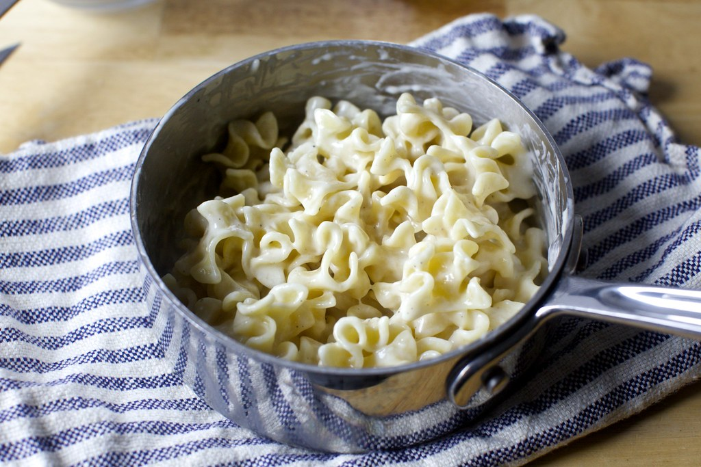

Mac and Cheese

This is Smitten Kitchen's recipe for mac and cheese! Very quick and simple to put together!
- Salt
- 4 ounches dried pasta
- 2 tsp salted or unsalted butter
- 2 tsp all-purpose flour
- 1/2c low-fat or whole milk
- Lots of freshly ground black pepper
- 1/2c finely grated parmesan or pecorino cheese
Steps
- Bring a small-to-medium pot of very well-salted water to a boil and add your dried pasta. Cook it until firm tender, then drain.
- Return pot to stove and melt butter in the bottom. Using a spoon or whisk, add flour and mix until it disappears. Add milk, a tiny splash at a time, stirring constantly so no lumps form.
- Season with 1/4 teaspoon kosher salt and many grinds of black pepper. Bring sauce to a simmer. Cook, stirring, for 1 to 2 minutes.
- Remove from heat and stir in grated cheese until combined. Add drained pasta, stir to evenly coat. Scoop into a bowl and finish it with more black pepper, if you wish. Repeat as needed.